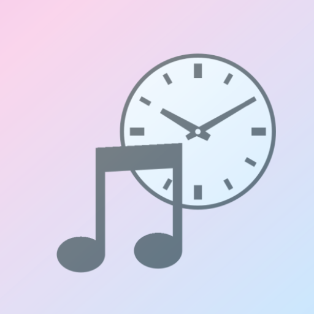
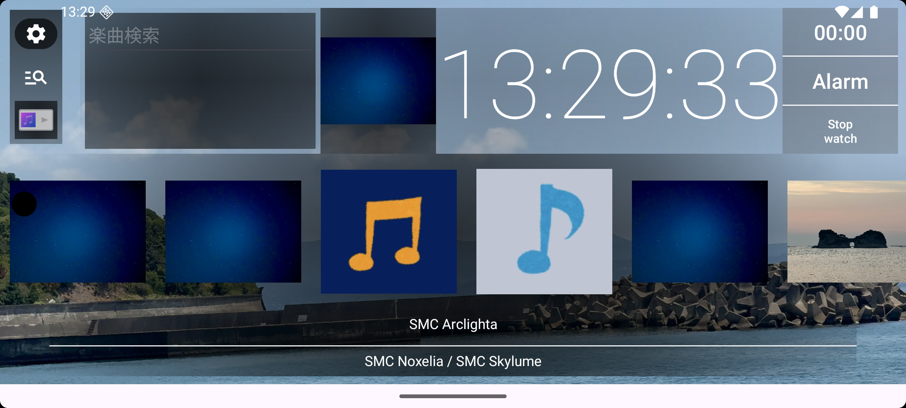
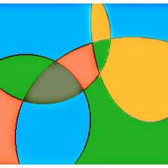

公開中SenseMusicClock
端末内の音楽ファイルを再生するローカル音楽プレーヤーです。

Developer Site
個人で開発したアプリの情報をまとめています。リポジトリ、問い合わせ先、プライバシーポリシーへすぐアクセスできます。

公開中のアプリと関連リンクです。

公開中端末内の音楽ファイルを再生するローカル音楽プレーヤーです。

各アプリの GitHub Issues からお問い合わせください。